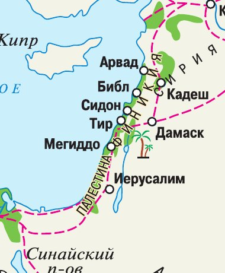
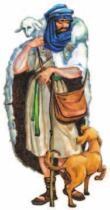
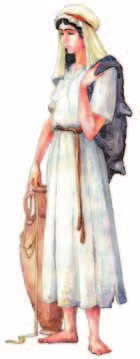
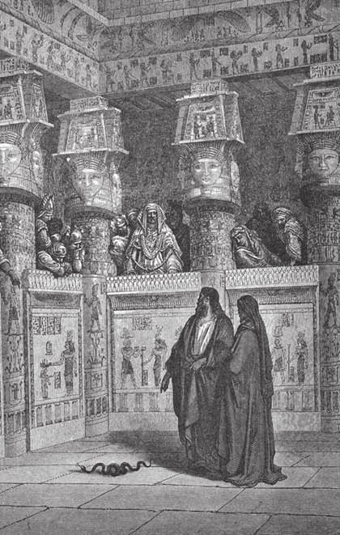
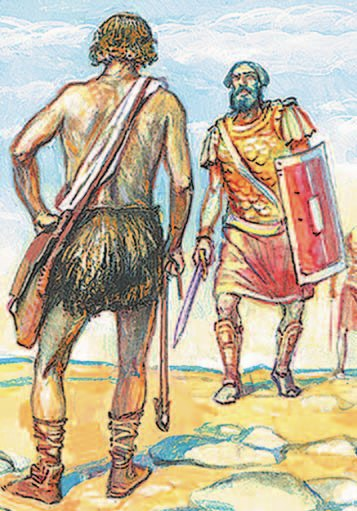
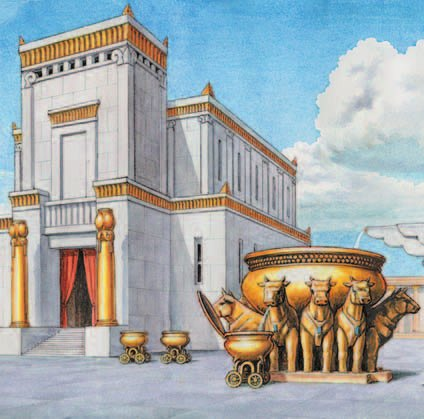

Природа и занятия населения
— небольшая область между Египтом и Сирией; она существует и в наше время. Бо́льшую её часть занимают горы и степи.
Условия для земледелия здесь были не такие хорошие, как в Египте и Месопотамии. Зато занятий было много сразу: земледелие, скотоводство, ремёсла и торговля.
В плодородных долинах Иордана и на прибрежных равнинах выращивали пшеницу, ячмень, виноград, оливы и инжир. Скотоводство было не менее важным — особенно разведение овец и коз. Развивались рыболовство и охота. Гончарное дело, ткачество и металлообработка давали товары для торговли с соседями.
Бо́льшая часть Палестины в древности называлась , а основным населением был семитский народ ханаанеев — к ним относились и финикийцы (§13). У ханаанеев было много городов-государств.
Палестина издревле была перекрёстком многих религий и культур: здесь возникали и рушились государства, а их народы попадали под власть разных империй.
В XII (12) веке до н. э. значительную часть Ханаана занял другой семитский народ — еврейские племена, объединённые в племенной союз Израиль.
С течением времени древние евреи перешли от многобожия к : стали поклоняться одному богу. Его называли и почитали как создателя мира.
Легенды и мифы о происхождении и родине евреев содержит — самая древняя часть Библии. Родоначальником евреев по этим преданиям был . Его внук Иаков во время голода переселился из Ханаана в Египет, а сыновья Иакова считались основателями 12 племён Израильского союза — «12 колен израилевых».
По преданию, долгое время израильтяне жили в Египте, где их угнетали. Пророк вывел соплеменников из египетского плена и привёл на Синай, а оттуда — к границам Ханаана.
После смерти Моисея израильтяне завоевали Ханаан и осели там. Вот это расселение — уже исторический факт: оно случилось в XII (12) веке до н. э. А что в преданиях о более ранних событиях восходит к настоящей истории и существовали ли в действительности Авраам, Иаков и Моисей — предмет множества споров.
Палестина — небольшая географическая область, существующая и в наше время (территория между Египтом и Сирией). Большую её часть занимали горы и степи. Несмотря на то что условия для земледелия здесь были не такие хорошие, как в Древнем Египте и Месопотамии, имелись разнообразные виды деятельности и хозяйства: земледелие, скотоводство, ремёсла и торговля.
Большая часть Палестины в древности называлась Ханааном, а основной частью её населения был семитский народ ханаанеев (финикийцы тоже относились к ханаанеям). У ханаанеев было много городов-государств. Палестина издревле была перекрёстком многих религий и культур. Здесь возникали и рушились государства, народы которых попадали под власть различных империй.
В плодородных долинах Иордана и прибрежных равнинах выращивали пшеницу, ячмень, виноград, оливы и инжир. Скотоводство играло не менее важную роль, особенно разведение овец и коз. Развивались также рыболовство и охота. Ремёсла, такие как гончарное дело, ткачество и металлообработка, были значимой частью торговли, которая велась жителями Древней Палестины с соседними регионами.
В XII (12) веке до н. э. значительную часть Ханаана занял другой семитский народ — еврейские племена, объединённые в племенной союз Израиль. С течением времени древние евреи от многобожия перешли к монотеизму — поклонялись одному богу. Его называли Яхве и почитали как создателя мира.
Легенды и мифы о происхождении и родине евреев содержит Ветхий Завет — самая древняя часть Библии. Родоначальником евреев, по этим преданиям, был Авраам. Его внук Иаков переселился во время голода из Ханаана в Египет, и считалось, что сыновья Иакова стали основателями 12 племён, составлявших Израильский союз, — «12 колен израилевых».
После смерти Моисея израильтяне завоевали Ханаан и осели там. Это расселение израильтян в Ханаане — уже исторический факт (как говорилось выше, он имел место в XII (12) веке до н. э.). Что именно в библейских преданиях о предшествующих событиях восходит к реальной истории, а что является мифом, существовали ли в действительности Авраам, Иаков, Моисей или это легендарные герои — всё это — предмет множества споров.



- Кто населял Палестину в древности?
1. Условия для земледелия в Палестине были хуже, чем в Египте и Месопотамии. Как жители с этим справились?
2. Учебник говорит, что расселение израильтян в Ханаане — исторический факт, а про Авраама и Моисея ведутся споры. В чём здесь разница?
3. Финикийцы тоже были ханаанеями, и у ханаанеев было много городов-государств. Вспомни §13: чем финикийцы отличались от остальных жителей Палестины?
Израильское царство
Еврейские племена, переселившиеся в Палестину, долго боролись с соседями. Самыми опасными были западные соседи — , от названия которых и происходит слово «Палестина». Они уже умели изготавливать железо, которого евреи ещё не знали.
Около 1020 года до н. э. евреи избрали себе царя. Им стал простой воин . Он долго и успешно воевал с филистимлянами, но в итоге был побеждён.
Второй царь, , правил в 1010—970 годах до н. э. Он создал постоянное и сильное войско и разгромил филистимлян.
Давид расширил границы государства, захватил город Иерусалим и сделал его столицей. При дворе он ввёл пышные ритуалы и церемонии.
Еврейские племена, переселившиеся в Палестину, долго боролись с соседями. Самыми опасными для них были западные соседи — филистимляне, от названия которых происходит само слово «Палестина». Они уже умели изготавливать железо, которого евреи ещё не знали. Около 1020 года до н. э. евреи избрали себе царя. Им стал простой воин Саул. Он долго и успешно воевал с филистимлянами, но в итоге был побеждён.
Второй царь, Давид, правил в 1010—970 годах до н. э. Он создал постоянное и сильное войско и разгромил филистимлян.
Давид расширил границы государства, захватил город Иерусалим и сделал его столицей. При дворе он ввёл пышные ритуалы и церемонии.

Учебник рассказывает эту историю в рубрике «Любопытные детали».
Давид сказал: «Я сражусь с ним». Он вышел против Голиафа только с посохом и пращой в руке. Крикнув: «Выхожу на тебя во имя Господа!», взял камень и метнул из пращи. Камень попал великану в голову, и тот упал на землю. Давид подбежал, взял его большой меч и убил его. Когда филистимляне увидели, что их лучший богатырь повержен, они бежали.
- С какими опасностями сталкивались иудеи?
4. Почему для евреев было так важно, что филистимляне умели делать железо?
5. Саул воевал «долго и успешно», но в итоге был побеждён. А Давид филистимлян разгромил. Что он сделал иначе?
6. Давид не просто захватил Иерусалим, а сделал его столицей. Вспомни §5: кто и зачем поступил так же?
7. В истории про Давида и Голиафа один вышел в тяжёлой железной броне, другой — с пращой. Почему победил второй?
Соломон и иудаизм
Сын царя Давида был известен как правитель, мудрость которого прославила его на века.
При нём укрепились связи с соседями — Египтом, Финикией и другими государствами. Соломон построил в Иерусалиме храм бога Яхве.
После смерти Соломона, в 930—920-е годы до н. э., его царство разделилось на два: южное — Иудею и северное — Израиль. Столицей Израиля чуть позже стал город Самария, а столицей Иудеи остался Иерусалим.
Позднее эти царства переживали тяжёлые времена. бога Яхве объясняли жителям, что это наказание за злодеяния — прежде всего за отступление от единобожия и возврат к поклонению многим богам.
Пророки призывали: «Возненавидьте зло. Научитесь делать добро, ищите правды, спасайте угнетённого…» Так они надеялись вернуть народу милость божью. Самыми известными пророками были Илия и Исайя.
В Иудее в VIII—VII (8—7) веках до н. э. на основе древнееврейских верований возник — религия нового типа. Это была самая древняя религия, которая признавала существование единого бога.
Отличительными особенностями иудаизма были единобожие, вера в бессмертие души, вера в загробную жизнь и избранность еврейского народа, заключившего союз с богом.
Сын царя Давида Соломон был известен как правитель, мудрость которого прославила его на века.
При нём укрепились связи с соседями — Египтом, Финикией и другими государствами. Соломон построил в Иерусалиме храм бога Яхве. После смерти Соломона в 930—920-е годы до н. э. царство его разделилось на два: южное — Иудею и северное — Израиль. Столицей Израиля чуть позже стал город Самария, столицей Иудеи остался Иерусалим.
Позднее эти царства переживали тяжёлые времена. Пророки бога Яхве объясняли жителям, что это наказание за злодеяния, в первую очередь за отступление от единобожия и возврат к поклонению многим богам. Пророки призывали: «Возненавидьте зло. Научитесь делать добро, ищите правды, спасайте угнетённого…» Таким способом они надеялись вернуть милость божью еврейскому народу. Наиболее известными среди пророков были Илия и Исайя.
В Иудее в VIII—VII (8—7) веках до н. э. на основе древнееврейских верований возник иудаизм — религия нового типа. Иудаизм был самой древней религией, которая признавала существование единого бога. Отличительными особенностями иудаизма были единобожие, вера в бессмертие души, загробную жизнь, избранность еврейского народа, заключившего союз с богом.

Учебник приводит эту легенду в рубрике «Любопытные детали».
И сказал царь Соломон: «Вот меч. Рассеките ребёнка и отдайте каждой из них половину». И одна из женщин ответила спокойно: «Пусть так и будет — ни мне, ни тебе». Другая же в ужасе закричала: «Нет! Лучше отдайте его другой, лишь бы он был жив».
Выслушав их, Соломон произнёс: «Отдайте ребёнка той, которая испугалась, что он умрёт. Она — его мать». И все поняли, что ничто не укроется от мудрости царя.
- Почему с царём Соломоном связывают расцвет Израильского царства?
8. Соломон прославился мудростью, а не победами. Почему его правление всё равно считают расцветом?
9. Пророки объясняли беды наказанием за возврат к многим богам. Что это говорит о том, насколько прочным было единобожие?
10. Иудаизм возник в Иудее в VIII—VII веках до н. э. — то есть уже после того, как царство раскололось. Почему новая религия сложилась именно в трудные времена?
11. В какой стране Древнего Востока уже пробовали перейти к единобожию и чем это кончилось?
Подведём итоги
- На какие государства и почему разделилось Израильское царство? Найди и покажи на карте столицы этих государств.
- Какую роль сыграл Авраам для иудеев?
- Вспомни, в каком государстве Древнего Востока была предпринята попытка перехода к единобожию. Чем она закончилась?
- Какое значение для иудеев имели реформы царя Соломона?
Сформулируй ответ на главный вопрос параграфа — чем отличалась религия, принятая древними евреями, от верований других народов древности? Приведи два-три довода.
Проверь себя
Нажимай по очереди — от самого древнего события к самому близкому к нам.
1. Между какими странами лежала Палестина?
2. Что такое монотеизм?
3. Чем филистимляне были опасны для евреев?
4. Какой царь сделал Иерусалим столицей?
5. На какие два государства разделилось царство после Соломона?
6. Что было главной особенностью иудаизма?
Расскажи вслух
Палестина и её жители
- Область между Египтом и Сирией, горы и степи; земледелие хуже, чем в Египте, зато много занятий сразу.
- Долины Иордана: пшеница, ячмень, виноград, оливы, инжир; овцы и козы; рыболовство, охота; гончарное дело, ткачество, металлообработка.
- Ханаан и ханаанеи (к ним относились и финикийцы); в XII веке до н. э. часть Ханаана заняли еврейские племена — союз Израиль.
От многобожия к единобожию
- Древние евреи перешли к монотеизму: один бог Яхве, создатель мира.
- Ветхий Завет — самая древняя часть Библии: Авраам, Иаков, 12 колен израилевых, Моисей и выход из Египта.
- Расселение в Ханаане в XII веке — исторический факт; про более ранние события учёные спорят.
Три царя
- Около 1020 до н. э. — Саул, простой воин: воевал с филистимлянами, которые умели делать железо, но был побеждён.
- 1010—970 — Давид: постоянное войско, разгром филистимлян, Иерусалим стал столицей.
- Соломон: мудрость, связи с Египтом и Финикией, храм Яхве. После него, в 930—920-е, раскол на Израиль (Самария) и Иудею (Иерусалим).
Иудаизм
- Тяжёлые времена, пророки Илия и Исайя объясняли беды отступлением от единобожия.
- VIII—VII века до н. э., Иудея: на основе древнееврейских верований возник иудаизм.
- Особенности: единобожие, бессмертие души, загробная жизнь, избранность народа, заключившего союз с богом.